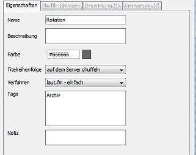
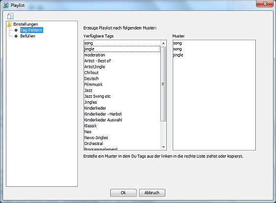
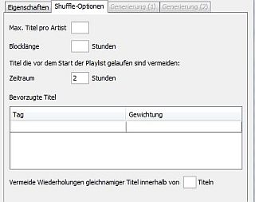
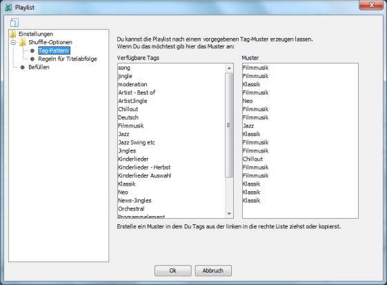
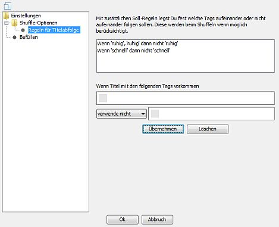

Playlists auf dem Server shuffeln

Playlist zum Shuffeln markieren
Du kannst in den Playlist-Eigenschaften festlegen ob Playlists auf dem Server geshuffelt werden sollen:
- Laß Dir die entsprechende Playlist anzeigen
- Klicke auf
- Wähle als Option für
- Wähle eines der möglichen
- - einfaches Umsortieren der Titel, nicht weiter konfigurierbar
- - Titelabfolge kann mittels Tags kontrolliert werden ("Stundenuhr")
- - Umsortierung mit vielen Konfigurationsmöglichkeiten
- - das ist die jeweils vorherige Version von vor dem letzten größeren Update. Sollte es nach einem Update Probleme geben die nicht umgehend behoben werden können kannst Du auf diese Version zurück greifen.
- - das ist der aktuelle Entwicklungsstand. Diese Version kann Änderungen / Erweiterungen enthalten die noch getestet werden. Benutzung auf eigenes Risiko.
- - zerlegt eine Playlist mit vordefinierter Titelreihenfolge in Teile und wählt einen davon aus.
- - spielt die Titel einfach in der Originalreihenfolge ab, setzt jedoch nach einer Unterbrechung an der letzten Position wieder auf insofern die nicht länger als 24 Stunden zurück liegt.
In Abhängigkeit des gewählten Verfahrens werden Dir in der Baumstruktur links weitere Einträge angezeigt über die Du das Verhalten im Detai konfigurieren kannst. Wenn Du das Verfahren ausgewählt hast kannst Du außerdem noch ein passendes Profil aus den Grundeinstellungen auswählen. Gibt es nur ein paasendes Profil so wird dieses automatisch ausgewählt.
Optionen für "laut.fm - Tag-Pattern"

Bei diesem Verfahren gibst Du ein Muster (Pattern) für die Titelreihenfolge auf Basis von Tags vor. Angenommen Du hast Titel mit den Tags A, B und C versehen und gibst als Muster "A B A C" an: Dann würde zunächst ein mit A getaggter Titel verwendet, dann ein B-Titel gefolgt von einem A-Titel und einem C-Titel - danach wird das Muster wiederholt. In diesem Fall kämen A-Titel also häufiger vor als mit B oder C getaggte Titel.
Neben den Tags die Du selbst vergeben hast gibt es noch "song", "jingle" oder "moderation" als "magic Tags" die einfach alle Tracks des entsprechenden Typs selektieren. Wenn Du also z. B. nach jedem zweiten Titel ein Jingle platzieren möchtest setzt Du einfach "song song jingle" als Pattern.
Um ein Muster festzulegen ziehe oder kopiere Tags aus der linken Liste in die Rechte Liste. Innerhalb der linken Liste kannst Du Tags per Drag & Drop oder Ausschneiden / Kopieren / Einfügen umsortieren.
Optionen für "Station Admin - Shuffle"

Für das Shuffeln mit dem Station Admin-Verfahren hast Du folgende Optionen:
- : Wenn nichts weiter angegeben wird wird maximal ein Track eines Artists pro Stunde Laufzeit verwendet. Möchtest Du weniger Titel pro Artist verwenden gib ein Limit an. Ein zu hohes Limit das zu einer Verletzung der GVL-Regeln führen würde wird automatisch beim Shuffeln verworfen.
- : Ist die Länge der Playlist kürzer als die Laufzeit gemäß Sendeplan werden intern mehrere Durchläufe gemacht bist die gewünschte Länge erreicht ist. Dabei werden jedoch wenn nichts weiter angegeben ist (fast) alle verfügbaren Titel verwendet - d. h. Gewichtungs- und Vermeidungsregeln greifen nicht oder kaum. Gibst Du eine Blocklänge an die deutlich kürzer ist als die Playlistlänge gibt es intern zwar mehr Durchläufe um die gewünschte Länge zu erreichen, es können dann aber pro Durchlauf Titel bevorzugt oder vermieden werden. Ist die Playlistlänge größer als die Laufzeit gemäß Sendeplan hat diese Einstellung keine Wirkung.
- Um zu vermeiden dass Titel die gerade erst gespielt wurden direkt wieder gespielt werden gib einen in Stunden an. Normalerweise werden die Tracks der letzten zwei Stunden mit geringerer Wahrscheinlichkeit verwendet - Du kannst den Zeitraum aber auf bis zu 24 Stunden erhöhen.
- : Optional kannst Du noch Regeln angeben um bestimmte Titel bei der Auswahl zu bevorzugen oder die Wahrscheinlichkeit für eine Auswahl zu reduzieren.
Das funktioniert wieder auf Basis von Titeltags: Wähle ein Tag und eine Häufigkeitsstufe für Titel die mit diesem Tag versehen sind. Entsprechende Titel können häufiger oder seltener gespielt werden als "normale" Titel - für beide Varianten stehen jeweils drei Stufen zur Verfügung.
- Optional kann die kurzfristige Wiederholung von (etwa verschiedene Versionen des gleichen Songs) unterbunden werden. Ausschlaggebend hierfür ist alleine der Titel des Tracks. Es wird nur auf Buchstaben und Ziffern geschaut - Komma, Klammern etc spielen beim Vergleich keine Rolle.
- können stündlich oder in einem vorgegebenen Abstand eingefügt werden. Die Nachrichten werden innerhalb des vorgegebenen Zeitfensters so früh wie möglich platziert. Diese Optionen sind nur verfügbar wenn der Nachrichten-Track in der Playlist enthalten ist. Ein am Playlistanfang positioniertes Muster aus Nachrichten und Jingles wird bei der Wiederholung der Nachrichten beibehalten. D. h. stehen z. B. am Playlist Anfang ein Jingle und dann die Nachrichten so wird dieses Jingle jedes Mal vor den Nachrichten platziert. Steht ein Jingle nach den Nachrichten so wird dieses Jingle immer nach den Nachrichten wiederholt.

Im Bereich kannst Du optional ein Muster auf Basis von Tags vorgeben das beim Aufbau der Playlist befolgt werden soll. Diese funktioniert genauso wie beim "laut.fm - Tag-Pattern"-Verfahren (siehe oben).
Gibst Du kein Muster an wird gemäß der übrigen Vorgaben eine zufällige Titelreihenfolge erzeugt.
Achtung: Solltest Du ein Tag-Muster angeben und über dieses Tag-Muster Jingles einfügen greifen die Regeln für die Jingle-Platzierungen aus den Grundeinstellungen nicht mehr.
Hast Du also z. B. in den Grundeinstellungen festgelegt dass alle 20 Minuten ein Jingle platziert werden soll und fügst über das Tag-Muster keine Jingles ein so wird gemäß den Grundeinstellungen alle 20 Minuten ein Jingle platziert. Gibst Du dagegen ein Muster wie song-song-jingle an würde nach jedem zweiten Song ein Jingle platziert - die 20 Minuten-Regel aus den Grundeinstellungen ist dann hinfällig.

Im Bereich kannst Du Soll-Regeln auf Basis von Tags angeben die nach Möglichkeit eingehalten werden sollen.
Ein Beispiel: Du möchtest verhindern dass mehr als zwei ruhige Titel hintereinander gespielt werden. Du hast alle langsamen Titel mit einem Tag "ruhig" versehen. Als Bedingung wählst Du dann 2x das "ruhig"-Tag aus (klicke auf die kleine graue Box um die Tagauswahl zu öffnen), in der Auswahlbox wählst Du "verwende nicht" und danach dann erneut "ruhig".
Du kannst auch positive Regeln angeben - also z. B. so etwas wie "Wenn 'ruhig', 'ruhig' dann 'schnell'".
Bitte beachte dass es keine Garantie für die Einhaltung der Regeln gibt. Aus Performancegründen wird bei einem Verstoß nur eine begrenzte Zahl an Alternativen durchgetestet. Auch haben Regeln bezüglich des Abstands zweier Titel des gleichen Künstlers Vorrang.
Das Verhalten für die folgenden Bereich wird durch das zugewiesene Profil aus den Grundeinstellungen bestimmt:
- Umgang mit Jingles und Wortbeiträgen
- Verwendung von gebundenen Jingles
- Setzen von Ad-Triggern
- Normalisierung von Künstlernamen
Optionen für "Station Admin - Teilplaylist auswählen"
Das Verfahren "Teilplaylist auswählen" ist geeignet wenn Du mehrere vorgefertigte Playlists hast über die Du rotieren möchtest. In diesem Fall kannst Du diese (Teil)Playlists alle in einer großen Playlist ablegen und die Teile durch ein spezielles Jingle voneinander trennen. Vor dem Start wird dann einer dieser Teile ausgewählt und unverändert gespielt. Es werden hierbei werder Jingles noch Ad-Trigger eingefügt oder verändert.
Für die Auswahl einer Teilplaylist hast Du folgende Optionen:
- - hier kannst Du ein Jingle auswählen das die Playlist unterteilt. Es können nur Jingles ausgewählt werden die auch in der Playlist vorhanden sind. Empfohlen wird ein eigenes Marker-Jingle das sonst nicht verwendet wird. Gibst Du kein Trennerjingle an wird die Playlist anhand der im Sendeplan eingetragenen Länge unterteilt - d. h. wennn die Playlist 3 Stunden laufen soll wird sie intern Teilplaylists a 3 Stunden unterteilt.
- - legt fest ob das Jingle das zum Trennen der Teile verwendet wird auch gespielt werden soll
- - Entweder wird ein Teil völlig zufällig ausgewält oder es wird über die Teile rotiert. Wenn über die Teile rotiert werden soll musst Du angeben wie oft ein neuer Teil ausgewählt werden soll: Steht Deine Playlist z. B. einmal am Tag im Sendeplan wäre "jeden Tag einen anderen Teil auswählen" die passende Option. Spielst Du eine Playlist nur einmal pro Woche wählst Du "jede Woche einen anderen Teil auswählen"